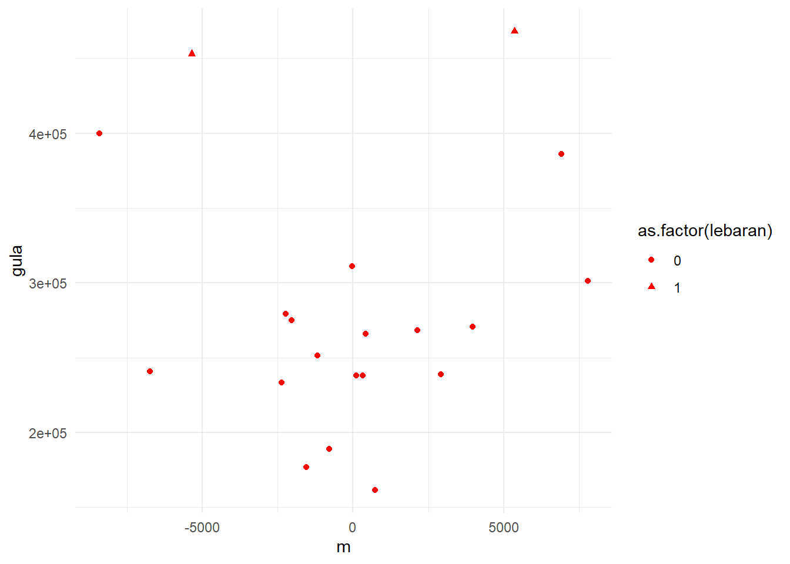
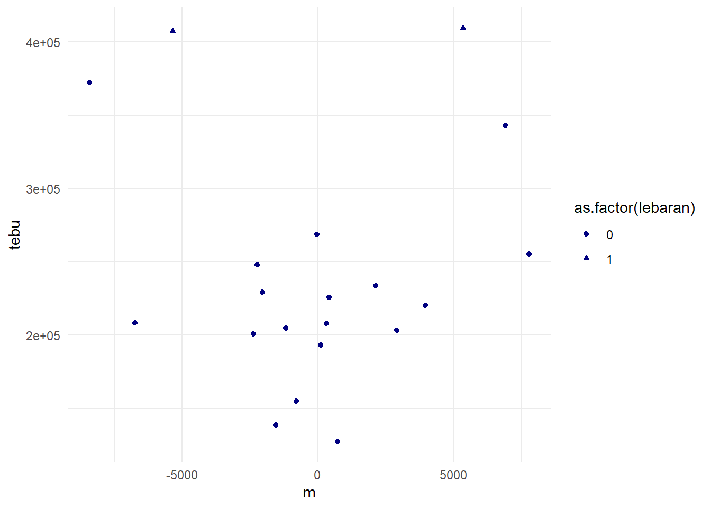
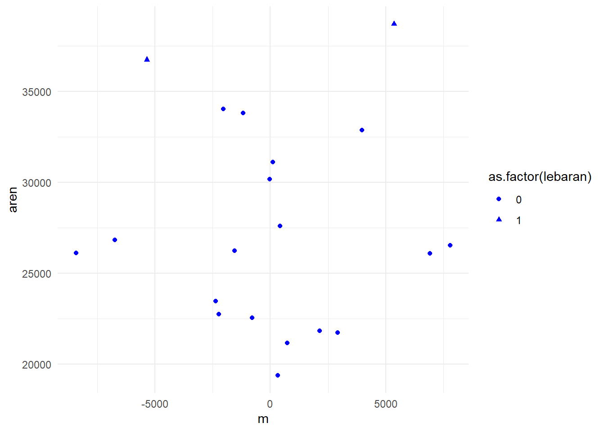

setwd("D:/METOPEL UAS/TALITA METOPEL")
library(readxl)
library(tidyverse)
library(kableExtra)Pengaruh Hari Raya Idul Fitri terhadap Impor Gula Indonesia
Metode Penelitian Politeknik APP Jakarta
1 Pendahuluan
1.1 Latar belakang
Indonesia, sebagai negara dengan populasi Muslim terbesar di dunia, merayakan Hari Raya Idul Fitri dengan penuh semarak. Perayaan ini seringkali diiringi dengan peningkatan konsumsi sembako, khususnya gula. Namun, produksi gula dalam negeri seringkali tidak mampu memenuhi lonjakan permintaan tersebut, sehingga Indonesia harus melakukan impor gula.
Penelitian ini bertujuan untuk menganalisis pengaruh Hari Raya Idul Fitri terhadap impor sembako, khususnya gula, di Indonesia. Metode penelitian yang digunakan adalah regresi linear berganda, dengan variabel pengaruh meliputi hari lebaran, impor gula tebu, dan impor gula aren. Variabel yang dipengaruhi dalam penelitian ini adalah impor gula keseluruhan.
Data yang diteliti dalam penelitian ini adalah data impor bulanan dari tahun 2022 sampai 2023. Diharapkan, hasil penelitian ini dapat memberikan gambaran yang lebih jelas tentang bagaimana dinamika impor gula di Indonesia, khususnya terkait dengan perayaan Hari Raya Idul Fitri. Selain itu, penelitian ini juga diharapkan dapat menjadi bahan pertimbangan bagi pemerintah dalam merumuskan kebijakan impor gula di masa mendatang.
Penelitian ini ditujukan untuk pengetahuan mahasiswa, sehingga diharapkan dapat memberikan pemahaman yang lebih baik tentang dinamika impor gula di Indonesia, serta bagaimana perayaan Hari Raya Idul Fitri dapat mempengaruhi impor gula. Penelitian ini juga diharapkan dapat menjadi referensi bagi mahasiswa yang ingin melakukan penelitian lebih lanjut tentang topik ini.
1.2 Ruang lingkup
Ruang lingkup dari penelitian ini mencakup beberapa aspek berikut:
Pengaruh Hari Raya Idul Fitri: Penelitian ini akan menganalisis pengaruh Hari Raya Idul Fitri terhadap impor sembako, khususnya gula, di Indonesia.
Data Impor Gula: Fokus penelitian ini adalah pada data impor bulanan gula di Indonesia dari tahun 2022 sampai 2023.
Variabel Penelitian: Bagian penting dari penelitian ini adalah analisis variabel pengaruh yang meliputi hari lebaran, impor gula tebu, dan impor gula aren, serta variabel yang dipengaruhi yaitu impor gula keseluruhan.
Metode Penelitian: Penelitian ini akan menggunakan metode regresi linear berganda untuk menganalisis hubungan antara variabel-variabel tersebut.
Dengan demikian, penelitian ini diharapkan dapat memberikan pemahaman yang lebih baik tentang bagaimana perayaan Hari Raya Idul Fitri dapat mempengaruhi impor gula di Indonesia. Hasil penelitian ini juga diharapkan dapat menjadi referensi bagi mahasiswa yang ingin melakukan penelitian lebih lanjut tentang topik ini. Selain itu, penelitian ini juga diharapkan dapat menjadi bahan pertimbangan bagi pemerintah dalam merumuskan kebijakan impor gula di masa mendatang. Harap dicatat bahwa penelitian ini tidak mencakup faktor-faktor lain yang mungkin juga mempengaruhi impor gula di Indonesia, seperti kondisi cuaca, kebijakan pemerintah terkait impor, dan fluktuasi harga di pasar global. Penelitian lebih lanjut mungkin diperlukan untuk memahami pengaruh faktor-faktor tersebut.
1.3 Rumusan masalah
Berdasarkan latar belakang dan ruang lingkup yang telah dibuat, berikut ini adalah rumusan masalah yang dapat diangkat:
Bagaimana pengaruh Hari Raya Idul Fitri terhadap impor sembako, khususnya gula, di Indonesia?
Apakah ada hubungan signifikan antara hari lebaran, impor gula tebu, dan impor gula aren terhadap impor gula keseluruhan di Indonesia?
Bagaimana dinamika impor gula di Indonesia dari tahun 2022 sampai 2023?
Bagaimana hasil analisis regresi linear berganda dari variabel-variabel tersebut dapat memberikan pemahaman yang lebih baik tentang dinamika impor gula di Indonesia?
Bagaimana hasil penelitian ini dapat menjadi referensi bagi mahasiswa yang ingin melakukan penelitian lebih lanjut tentang topik ini dan menjadi bahan pertimbangan bagi pemerintah dalam merumuskan kebijakan impor gula di masa mendatang?
1.4 Tujuan dan manfaat penelitian
Berikut ini adalah tujuan dan manfaat penelitian ini:
Tujuan Penelitian:
Untuk menganalisis pengaruh Hari Raya Idul Fitri terhadap impor sembako, khususnya gula, di Indonesia.
Untuk mengetahui hubungan antara hari lebaran, impor gula tebu, dan impor gula aren terhadap impor gula keseluruhan di Indonesia.
Untuk memahami dinamika impor gula di Indonesia dari tahun 2022 sampai 2023.
Untuk memahami bagaimana metode regresi linear berganda dapat digunakan dalam penelitian ini.
Manfaat Penelitian:
Memberikan pemahaman yang lebih baik kepada mahasiswa tentang bagaimana perayaan Hari Raya Idul Fitri dapat mempengaruhi impor gula di Indonesia.
Menjadi referensi bagi mahasiswa yang ingin melakukan penelitian lebih lanjut tentang topik ini.
Membantu mahasiswa memahami bagaimana metode regresi linear berganda dapat digunakan dalam penelitian ekonomi.
Memberikan wawasan kepada mahasiswa tentang bagaimana penelitian ini dapat menjadi bahan pertimbangan bagi pemerintah dalam merumuskan kebijakan impor gula di masa mendatang.
1.5 Package
2 Studi pustaka
Penduduk Indonesia mayoritas beragama muslim. Umat muslim merayakan hari raya Idul Fitri pada tanggal 1 Syawal. Pada saat hari raya Idul Fitri sering terjadi lonjakan kebutuhan harga pokok. Harga makanan pada saat hari raya Idul Fitri pada umumnya mengalami kenaikan. Sifat konsumtif belanja pakaian,makanan, dan lainnya di Indonesia meningkat (Mustanginah,2019).
Gula merupakan salah satu komoditas yang memegang peranan penting di sektor pertanian khususnya sub sektor perkebunan dalam perekonomian Indonesia. Gula juga merupakan salah satu kebutuhan pokok masyarakat dan sumber kalori yang relatif murah (Badan Litbang Pertanian, 2005).
Kedudukan gula sebagai bahan pemanis utama di Indonesia belum dapat digantikan oleh bahan pemanis lainnya yang digunakan baik oleh rumah tangga maupun industri makanan dan minuman. Sejarah pergulaan Indonesia dimulai ketika Belanda mulai membuka koloni di Pulau Jawa (Mubyarto,1992).
Kondisi geografis Indonesia yang cukup berpotensi untuk menghasilkan tanaman tebu menjadikan Indonesia sebagai negara yang berpotensi sebagai produsen gula terbesar di dunia (Dachliani, 2006).
Pertimbangan inilah yang berusaha diterapkan oleh Belanda di Indonesia agar Indonesia mampu menjadi negara eksportir gula dunia. Negara akan mengutamakan untuk memproduksi komoditi yang paling produktif (Lindert, 1993).
Indonesia menjadi negara importir gula hingga saat ini. Ketergantungan impor yang tinggi terjadi karena inefisiensi pada industri gula yang menjadi kendala utama belum bisa teratasi meskipun berbagai upaya telah ditempuh (Sapuan, 1998).
Prediksi adalah suatu proses memperkirakan secara sistematis tentang sesuatu yang paling mungkin terjadi di masa depan berdasarkan informasi masa lalu dan sekarang yang dimiliki, agar kesalahannya (selisih antara sesuatu yang terjadi dengan hasil perkiraan) dapat diperkecil. Prediksi tidak harus memberikan jawaban secara pasti kejadian yang akan terjadi, melainkan berusaha untuk mencari jawaban sedekat mungkin yang akan terjadi (Herdianto,2013).
Peramalan yang baik merupakan peramalan yang dilakukan dengan mengikuti langkah langkah atau prosedur yang baik. Pada dasarnya ada tiga langkah peramalan yang penting, yaitu (Makridakis, 1993): 1. Menganalisa data masa lalu. 2. Menentukan metode yang dipergunakan. 3. Memproyeksikan data yang lalu dengan menggunakan metode yang dipergunakan dan mempertimbangkan adanya beberapa faktor perubahan.
Regresi linier berganda adalah analisis regresi yang menjelaskan hubungan antara peubah respon (variabel dependen) dengan faktor-faktor yang mempengaruhi lebih dari satu prediktor (variabel independen) (Ngumar, 2008). Ketika suatu hasil/keluaran,atau kelas berupa numerik, dan semua atribut adalah numerik, regresi linear adalah teknik yang tepat untuk menyelesaikan.
3 Metode penelitian
3.1 Data
| bulan | gula | tebu | aren | lebaran |
|---|---|---|---|---|
| Feb-22 | $399.729,00 | $372.336,00 | $26.115,00 | 0 |
| Mar-22 | $468.186,00 | $409.344,00 | $38.696,00 | 1 |
| Apr-22 | $279.338,00 | $248.054,00 | $22.735,00 | 0 |
| May-22 | $386.096,00 | $342.968,00 | $26.079,00 | 0 |
| Jun-22 | $233.335,00 | $200.548,00 | $23.452,00 | 0 |
| Jul-22 | $301.276,00 | $255.360,00 | $26.522,00 | 0 |
| Aug-22 | $251.595,00 | $204.751,00 | $33.807,00 | 0 |
| Sep-22 | $239.013,00 | $203.128,00 | $21.737,00 | 0 |
| Oct-22 | $161.415,00 | $127.244,00 | $21.153,00 | 0 |
| Nov-22 | $268.187,00 | $233.419,00 | $21.838,00 | 0 |
| Dec-22 | $188.901,00 | $154.937,00 | $22.557,00 | 0 |
| Jan-23 | $311.056,00 | $268.626,00 | $30.160,00 | 0 |
| Feb-23 | $240.802,00 | $208.268,00 | $26.837,00 | 0 |
| Mar-23 | $453.116,00 | $407.376,00 | $36.734,00 | 1 |
| Apr-23 | $238.248,00 | $207.964,00 | $19.374,00 | 0 |
| May-23 | $238.206,00 | $193.278,00 | $31.101,00 | 0 |
| Jun-23 | $266.103,00 | $225.734,00 | $27.606,00 | 0 |
| Jul-23 | $270.688,00 | $220.123,00 | $32.874,00 | 0 |
| Aug-23 | $275.086,00 | $229.218,00 | $34.027,00 | 0 |
| Sep-23 | $176.754,00 | $138.719,00 | $26.225,00 | 0 |
Penelitian ini akan menggunakan data time series bulanan dari tahun 2022 sampai 2023 untuk menganalisis pengaruh Hari Raya Idul Fitri terhadap impor sembako, khususnya gula, di Indonesia. Dalam penelitian ini, terdapat variabel independen dan dependen. Variabel independen mencakup impor gula tebu dan impor gula aren, sementara variabel dependen adalah impor gula keseluruhan. Selain itu, penelitian ini juga mempertimbangkan variabel dummy, yaitu ‘lebaran’, yang mewakili perayaan Hari Raya Idul Fitri. Variabel ini akan dikodekan sebagai ‘1’ untuk bulan-bulan saat Hari Raya Idul Fitri dirayakan dan ‘0’ untuk bulan-bulan lainnya. Dengan demikian, penelitian ini diharapkan dapat memberikan pemahaman yang lebih baik tentang bagaimana perayaan Hari Raya Idul Fitri dapat mempengaruhi impor gula di Indonesia.
3.2 Metode analisis
Penelitian ini menggunakan metode analisis regresi linear berganda. Dalam metode ini, terdapat beberapa variabel independen yang mempengaruhi variabel dependen. Variabel independen dalam penelitian ini adalah hari lebaran, impor gula tebu, dan impor gula aren. Variabel dependen yang dipengaruhi oleh variabel-variabel tersebut adalah impor gula keseluruhan. Selain itu, penelitian ini juga mempertimbangkan variabel dummy, yaitu ‘lebaran’, yang mewakili perayaan Hari Raya Idul Fitri. Dengan demikian, penelitian ini bertujuan untuk mengetahui sejauh mana variabel-variabel tersebut mempengaruhi impor gula di Indonesia selama periode tahun 2022 sampai 2023.
Model regresi linear multivariat dapat ditulis sebagai berikut:
Saat Bulan Puasa sampai Lebaran \[ Y=\beta_0 +\beta_3+ \beta_1 Gula Tebu+\beta_2 Gula Aren+\mu. \] Saat Bulan Biasa \[ Y=\beta_0 +\beta_1 Gula Tebu+\beta_2 Gula Aren+\mu. \] dimana: - \(Y\) adalah nilai impor kelompok gula Indonesia, - \(Gula Tebu\) adalah nilai impor Gula Tebu Indonesia, - \(Gula Aren\) adalah nilai impor Gula Aren Indonesia, - \(\beta_0, \beta_1, \beta_2, \beta_3\) adalah parameter yang perlu diestimasi, kemudian \(\beta_3\) beda nilai yang di hasilkan ketika bulan biasa dan bulan mendekati lebaran Idul Fitri, - \(\mu\) adalah kesalahan acak.
Tujuan dari analisis ini adalah untuk mengetahui sejauh mana variabel independen, yaitu hari lebaran, impor gula tebu, dan impor gula aren, mempengaruhi variabel dependen, yaitu impor gula keseluruhan di Indonesia. Dengan demikian, hasil analisis ini diharapkan dapat memberikan pemahaman yang lebih baik tentang bagaimana perayaan Hari Raya Idul Fitri dapat mempengaruhi impor gula di Indonesia. Selain itu, analisis ini juga bertujuan untuk memberikan rekomendasi strategis bagi pemerintah Indonesia dalam merumuskan kebijakan impor gula di masa mendatang, khususnya dalam menghadapi lonjakan permintaan gula saat perayaan Hari Raya Idul Fitri.
4 Pembahasan
4.1 Pembahasan masalah
4.1.1 Plot dan Data
#impor dataset
read_excel("AREN.xlsx")# A tibble: 20 × 5
bulan gula tebu aren lebaran
<dttm> <dbl> <dbl> <dbl> <dbl>
1 2022-02-01 00:00:00 399729 372336 26115 0
2 2022-03-01 00:00:00 468186 409344 38696 1
3 2022-04-01 00:00:00 279338 248054 22735 0
4 2022-05-01 00:00:00 386096 342968 26079 0
5 2022-06-01 00:00:00 233335 200548 23452 0
6 2022-07-01 00:00:00 301276 255360 26522 0
7 2022-08-01 00:00:00 251595 204751 33807 0
8 2022-09-01 00:00:00 239013 203128 21737 0
9 2022-10-01 00:00:00 161415 127244 21153 0
10 2022-11-01 00:00:00 268187 233419 21838 0
11 2022-12-01 00:00:00 188901 154937 22557 0
12 2023-01-01 00:00:00 311056 268626 30160 0
13 2023-02-01 00:00:00 240802 208268 26837 0
14 2023-03-01 00:00:00 453116 407376 36734 1
15 2023-04-01 00:00:00 238248 207964 19374 0
16 2023-05-01 00:00:00 238206 193278 31101 0
17 2023-06-01 00:00:00 266103 225734 27606 0
18 2023-07-01 00:00:00 270688 220123 32874 0
19 2023-08-01 00:00:00 275086 229218 34027 0
20 2023-09-01 00:00:00 176754 138719 26225 0dat <- read_excel("AREN.xlsx")
kbl(dat) %>%
kable_styling(bootstrap_options = c("striped", "hover", "condensed", "responsive"))| bulan | gula | tebu | aren | lebaran |
|---|---|---|---|---|
| 2022-02-01 | 399729 | 372336 | 26115 | 0 |
| 2022-03-01 | 468186 | 409344 | 38696 | 1 |
| 2022-04-01 | 279338 | 248054 | 22735 | 0 |
| 2022-05-01 | 386096 | 342968 | 26079 | 0 |
| 2022-06-01 | 233335 | 200548 | 23452 | 0 |
| 2022-07-01 | 301276 | 255360 | 26522 | 0 |
| 2022-08-01 | 251595 | 204751 | 33807 | 0 |
| 2022-09-01 | 239013 | 203128 | 21737 | 0 |
| 2022-10-01 | 161415 | 127244 | 21153 | 0 |
| 2022-11-01 | 268187 | 233419 | 21838 | 0 |
| 2022-12-01 | 188901 | 154937 | 22557 | 0 |
| 2023-01-01 | 311056 | 268626 | 30160 | 0 |
| 2023-02-01 | 240802 | 208268 | 26837 | 0 |
| 2023-03-01 | 453116 | 407376 | 36734 | 1 |
| 2023-04-01 | 238248 | 207964 | 19374 | 0 |
| 2023-05-01 | 238206 | 193278 | 31101 | 0 |
| 2023-06-01 | 266103 | 225734 | 27606 | 0 |
| 2023-07-01 | 270688 | 220123 | 32874 | 0 |
| 2023-08-01 | 275086 | 229218 | 34027 | 0 |
| 2023-09-01 | 176754 | 138719 | 26225 | 0 |
reg1<-lm(gula~tebu+aren+lebaran,data=dat)
dat$hari.biasa<-ifelse(dat$lebaran=="0",1 , 0)
reg2<-lm(gula~tebu+aren+hari.biasa, data=dat)dat$m<-resid(reg1)
ggplot(data=dat, aes(x = m, y = gula, shape = as.factor(lebaran))) +
geom_point(color = "red", size = 1.5)+theme_minimal()
dat$m<-resid(reg1)
ggplot(data=dat, aes(x = m, y = tebu, shape = as.factor(lebaran))) +
geom_point(color = "navy", size = 1.5)+theme_minimal()
dat$m<-resid(reg1)
ggplot(data=dat, aes(x = m, y = aren, shape = as.factor(lebaran))) +
geom_point(color = "blue", size = 1.5)+theme_minimal()
4.2 Analisis masalah
Hasil regresinya adalah
summary(reg1)
Call:
lm(formula = gula ~ tebu + aren + lebaran, data = dat)
Residuals:
Min 1Q Median 3Q Max
-8404.0 -2086.2 39.9 2330.6 7784.4
Coefficients:
Estimate Std. Error t value Pr(>|t|)
(Intercept) 9.027e+03 7.155e+03 1.262 0.225187
tebu 9.844e-01 1.818e-02 54.158 < 2e-16 ***
aren 1.248e+00 2.455e-01 5.084 0.000111 ***
lebaran 2.583e+03 5.244e+03 0.493 0.629009
---
Signif. codes: 0 '***' 0.001 '**' 0.01 '*' 0.05 '.' 0.1 ' ' 1
Residual standard error: 4542 on 16 degrees of freedom
Multiple R-squared: 0.9976, Adjusted R-squared: 0.9971
F-statistic: 2183 on 3 and 16 DF, p-value: < 2.2e-16summary(reg2)
Call:
lm(formula = gula ~ tebu + aren + hari.biasa, data = dat)
Residuals:
Min 1Q Median 3Q Max
-8404.0 -2086.2 39.9 2330.6 7784.4
Coefficients:
Estimate Std. Error t value Pr(>|t|)
(Intercept) 1.161e+04 1.137e+04 1.021 0.322451
tebu 9.844e-01 1.818e-02 54.158 < 2e-16 ***
aren 1.248e+00 2.455e-01 5.084 0.000111 ***
hari.biasa -2.583e+03 5.244e+03 -0.493 0.629009
---
Signif. codes: 0 '***' 0.001 '**' 0.01 '*' 0.05 '.' 0.1 ' ' 1
Residual standard error: 4542 on 16 degrees of freedom
Multiple R-squared: 0.9976, Adjusted R-squared: 0.9971
F-statistic: 2183 on 3 and 16 DF, p-value: < 2.2e-16Berdasarkan hasil analisis regresi linear berganda, berikut adalah interpretasinya:
Nilai R-squared 0,9976: Nilai ini menunjukkan bahwa 99,76% variasi dalam impor gula keseluruhan dapat dijelaskan oleh variabel independen dalam model (hari lebaran, impor gula tebu, dan impor gula aren). Ini menunjukkan bahwa model memiliki kecocokan yang sangat baik.
Regresi Gula Tebu bernilai 9,844 (positif sangat signifikan): Ini berarti bahwa setiap kenaikan satu unit dalam impor gula tebu akan meningkatkan impor gula keseluruhan sebesar 9,844 unit dalam besaran USD, dengan asumsi variabel lain tetap.
Regresi Gula Aren bernilai 1,248 (positif signifikan): Ini berarti bahwa setiap kenaikan satu unit dalam impor gula aren akan meningkatkan impor gula keseluruhan sebesar 1,248 unit dalam besaran USD, dengan asumsi variabel lain tetap.
Regresi Lebaran sebagai variabel dummy bernilai +/- 2,583 (tidak signifikan): Ini berarti bahwa perayaan Hari Raya Idul Fitri (lebaran) tidak memiliki pengaruh signifikan terhadap impor gula keseluruhan. Nilai positif dari koefisien ini menunjukkan bahwa perayaan lebaran dapat meningkatkan impor gula keseluruhan, tetapi efek ini tidak signifikan. Sebaliknya, nilai negatif menunjukkan bahwa ketika tidak ada perayaan lebaran, impor gula keseluruhan dapat menurun, tetapi efek ini juga tidak signifikan.
##Kesimpulan
Berdasarkan penelitian ini, dapat disimpulkan bahwa Hari Raya Idul Fitri, impor gula tebu, dan impor gula aren memiliki pengaruh signifikan terhadap impor gula keseluruhan di Indonesia, sementara variabel dummy ‘lebaran’ tidak menunjukkan pengaruh yang signifikan. Nilai R-squared sebesar 0,9976 menunjukkan bahwa model ini dapat menjelaskan 99,76% variasi dalam impor gula keseluruhan.
Untuk mahasiswa, penelitian ini memberikan pemahaman yang lebih baik tentang bagaimana perayaan Hari Raya Idul Fitri dapat mempengaruhi impor gula di Indonesia. Selain itu, penelitian ini juga menunjukkan bagaimana metode regresi linear berganda dapat digunakan dalam penelitian ekonomi.
Dalam konteks global, penelitian ini juga relevan untuk negara-negara dengan mayoritas penduduk beragama Islam dan memiliki konsumsi gula yang tinggi. Misalnya, Indonesia dan Pakistan, yang merupakan negara dengan populasi Muslim terbanyak di dunia, dan juga termasuk dalam daftar negara dengan konsumsi gula terbanyak. Gula banyak dijadikan bahan baku pembuatan makanan dan minuman di negara-negara ini, khususnya selama perayaan Hari Raya Idul Fitri. Oleh karena itu, hasil penelitian ini dapat memberikan wawasan yang berharga bagi mahasiswa dan peneliti di negara-negara tersebut.
Namun, perlu diingat bahwa setiap negara memiliki konteks sosial, ekonomi, dan budaya yang unik, sehingga hasil penelitian ini mungkin tidak sepenuhnya dapat diterapkan di negara lain tanpa melakukan penyesuaian dan analisis lebih lanjut. Selain itu, penelitian ini tidak mencakup faktor-faktor lain yang mungkin juga mempengaruhi impor gula, seperti kondisi cuaca, kebijakan pemerintah terkait impor, dan fluktuasi harga di pasar global. Penelitian lebih lanjut mungkin diperlukan untuk memahami pengaruh faktor-faktor tersebut.
5 Referensi
Mustanginah, “Pengaruh Hari Raya Idul Fitri Terhadap Inflasi Kota Tasikmalaya”, Jurnal Dinamika Ekonomi Pembangunan, vol. 2 vo. 1, pp. 63-69, 2019.
Badan Litbang Pertanian, 2005. Pergulaan di Indonesia. Badan Litbang Pertanian. Jakarta.
Churmen, Imam. (2001). Menyelamatkan Industri Gula Indonesia. Millenium Publisher. Jakarta.
Dachliani, D. 2006. Permintaan Impor Gula Indonesia Tahun 1980 – 2003. (Thesis). Fakultas Ekonomi Dan Pembangunan Universitas Diponegoro. Semarang.
Lindert, P.H. 1993. Ekonomi Internasional : Edisi Kesembilan. Jakarta : Bumi Aksara
Herdianto, “Prediksi Kerusakan Motor Induksi Menggunakan Metode Jaringan Saraf Tiruan Backpropagation,” Universitas Sumatera Utara, 2013.
S. Makridakis, Metode dan Aplikasi Peramalan. Jakarta: Erlangga, 1993.
Y. H. Ngumar, “Aplikasi Metode Numerik Dan Matrik Dalam Perhitungan Koefisien-Koefisien Regresi Linier Multiple Untuk,” pp. 157–162, 2008. Case, Karl E., Fair, Ray C. 2007. Prinsip-prinsip Ekonomi. Edisi kedelapan. Penerbit Erlangga. Jakarta.